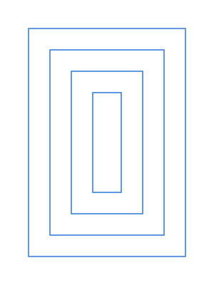
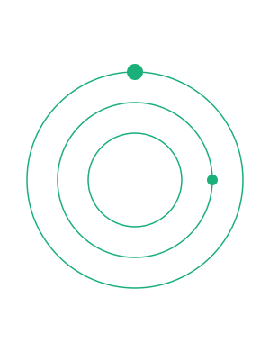
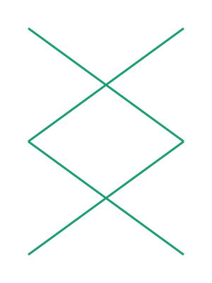
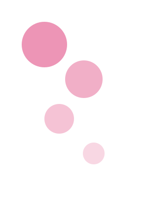
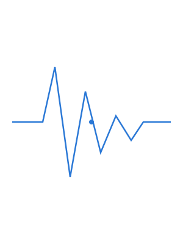
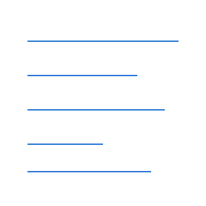
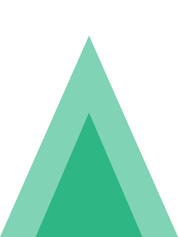

Selected work · 2024—2026
Objects that explain themselves.
Interface, print and installation work. Mostly systems: the piece is usually the set of rules, and what you see is one thing the rules produced.
Selected work · 2024—2026
Interface, print and installation work. Mostly systems: the piece is usually the set of rules, and what you see is one thing the rules produced.







Fold2023
Placeholder drawings generated by Claude
(Opus 5), then reviewed and approved for use by Gary Benninger — automation got
them to the shortlist, not past it. One rule each, one categorical token each, no
gradients; they carry no background of their own, so they take the ground from whatever
theme is running. Replace them with your own work and keep the
.ui-frame wrapper, which is what reserves the box.
About
Most of this work starts as a constraint rather than an image. A plotter that can only draw one continuous line. A press that can hold four colours. A grid that has to survive being reprinted at four different sizes.
If the system only produces one good result, it isn't a system — it's a drawing that took a long time.
The interesting part is the range: what the same set of rules does when you change one input. Half of what is shown here is the fourth or fifth output of something that produced two hundred.
Sketch on paper, formalise as code, plot, then decide by eye which outputs are worth printing. The eye stays in the loop — automation gets it to the shortlist, not past it.